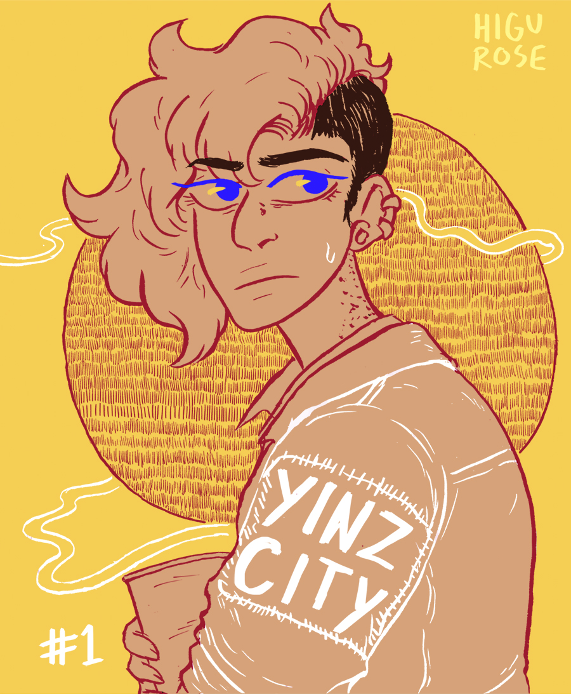

ISSUE 1: EVERYONE YOU LOVE



All the people I love the best
Are starting to get frustrated with me being a mess
And the people I kinda hate are always impressed
All the people I love the best
Have grown increasingly impatient with the person I am
And some people I hardly know will never understand